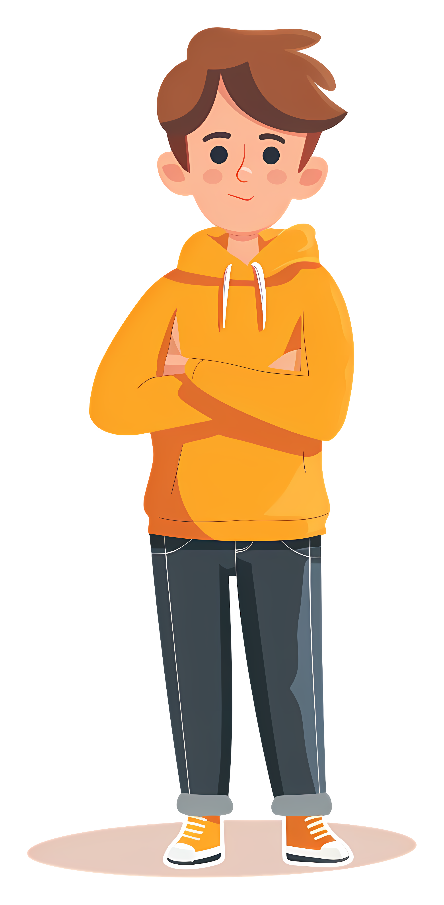
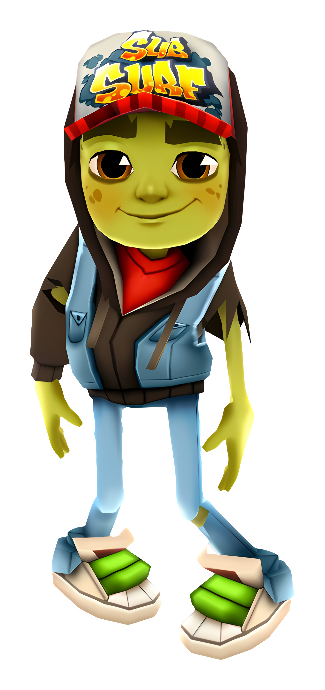
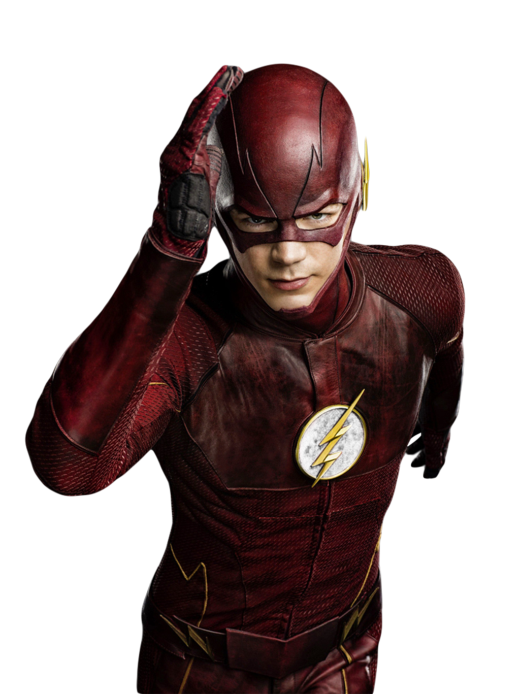
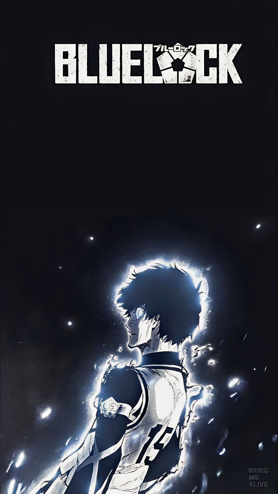
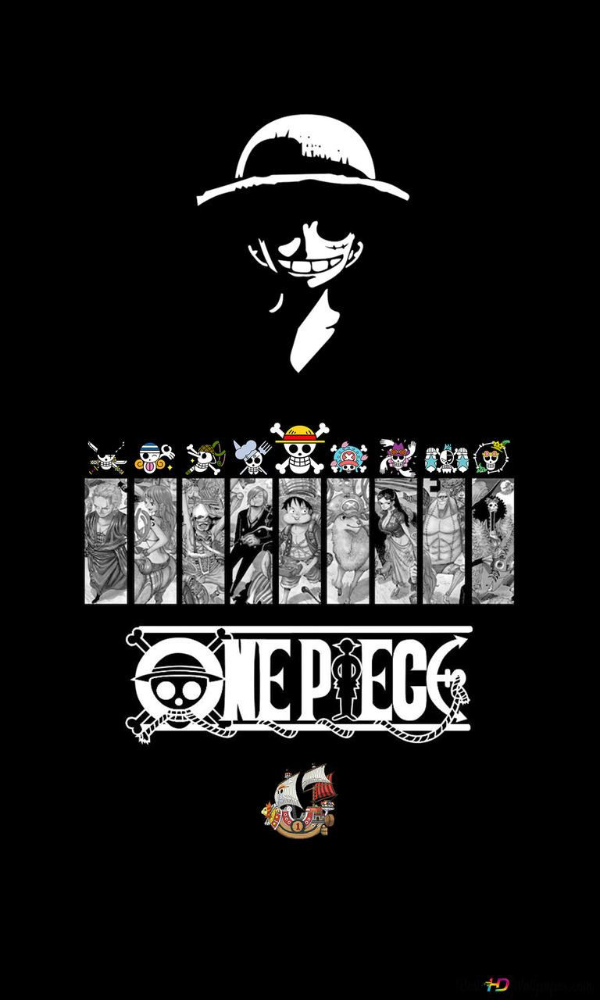
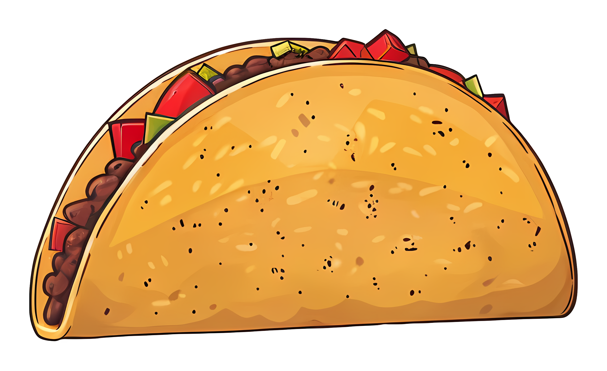

À propos de moi

Bonjour, je m'appelle omar. Je suis un passionné de jeux videos et j'aime mange des plats délicieux. En plus des jeux videos, j'aime aussi regarder des films et reste a la maison.
jeux videos
J'aime jouer des jeux de tous les types du monde. J'aime expérimenter avec de nouveaux jeux et partager mes decouvertes avec mes amis.

Netflix
Je suis un grand amateur de films,de series et d animes. J'aime regarder des films,series et animes de différents genres, des comédies aux films d'action.



nourriture
J'aime mange de la nourriture et découvrir de nouveaux plats.
